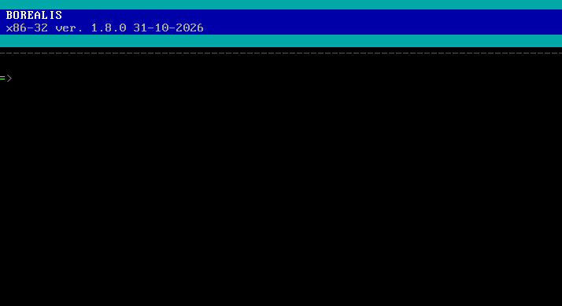
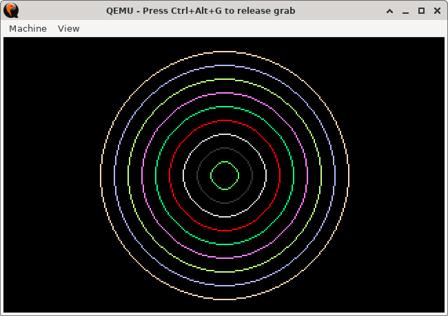

A from-scratch x86 operating system: bootloader (coil), kernel (helix), and a BASIC interpreter that is the shell. C and assembly, MIT licensed. Beta.

QEMU is the supported way. There is no browser demo right now.
git clone https://github.com/onyx-the-one/borealis cd borealis make make run
Needs i686-elf-gcc, nasm, python3, qemu-system-i386 (mtools for make pack). make run asks for PulseAudio; without it, use:
qemu-system-i386 -drive file=borealis.img,format=raw,if=floppy -boot a -m 4
Type HELP. Numbered lines are stored as a program, anything else runs now.
10 FOR I=1 TO 5 20 PRINT I, I*I 30 NEXT I RUN SAVE "SQUARES.BAS" NEW LOAD "SQUARES.BAS" LIST DIR BEEP 440,300 EDIT
10 SCREEN 13 20 FOR R=10 TO 90 STEP 10 30 CIRCLE 160,100,R,R 40 NEXT R 50 DELAY 3000 60 SCREEN 0 RUN

coil/ is the bootloader, src/helix/ is the kernel and interpreter, demos/ has examples.